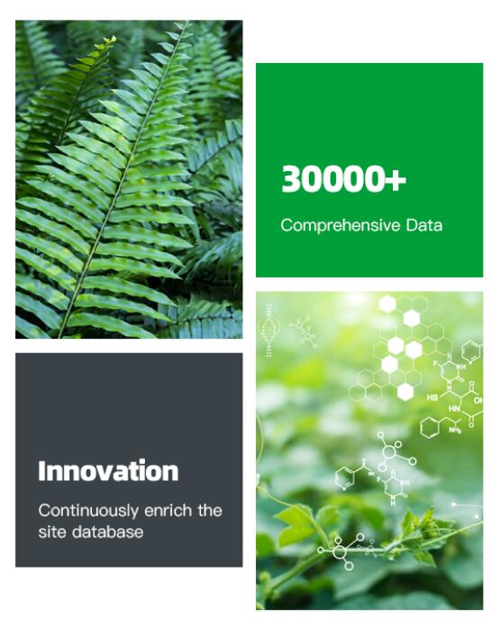
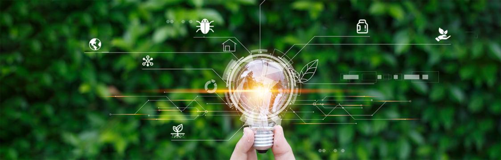

Unraveling the Mysteries of Pesticide Use in Japan
Unraveling the Mystery of Pesticide Use: Learn about pesticides and their deep-rooted relationship with crops and diseases.
Website Introduction
Explore a whole new world of plant diseases
7000+
200000+
2

Our Service

Q&A
About smart Q&A
Gragh
Knowledge Gragh Query
Our Promise
Plant Diease Information
At the Global Pesticide Knowledge Graph, we are committed to providing comprehensive and up-to-date information on plant diseases. Our platform aims to unravel the mysteries of pesticide use by delving deep into the relationships between pesticides, crops, and diseases. Users can rely on us to offer detailed insights into various aspects of plant health, including disease prevention, management, and control.
Updates and Improvements
We understand the importance of staying current with the latest developments in plant health research and technology. Therefore, we pledge to continuously update and enhance our platform to ensure that users have access to the most relevant and reliable information. Whether it's incorporating new data, refining search functionalities, we are dedicated to making ongoing improvements to meet the evolving needs of our users.

Valuing User Feedback
User feedback is invaluable to us as it provides insights into how we can better serve our community. We highly value the input of our users and actively encourage them to share their thoughts, suggestions, and concerns with us. By listening to our users, we can better understand their needs and preferences, ultimately leading to a more user-centered platform that meets their expectations. So, come join us now.
Prompt Issue Resolution
We are committed to providing timely and effective support to address any issues or concerns that users may encounter while using our platform. Our dedicated team of professionals is available to assist users with troubleshooting, resolving technical issues, and providing guidance whenever needed. We prioritize prompt issue resolution to ensure that users can continue to benefit from our platform without interruptions.

 Guizhou University, Guiyang,
Guizhou,
China
Guizhou University, Guiyang,
Guizhou,
China
 +86 17885726450
+86 17885726450 wangqi@samlab.cn
wangqi@samlab.cn